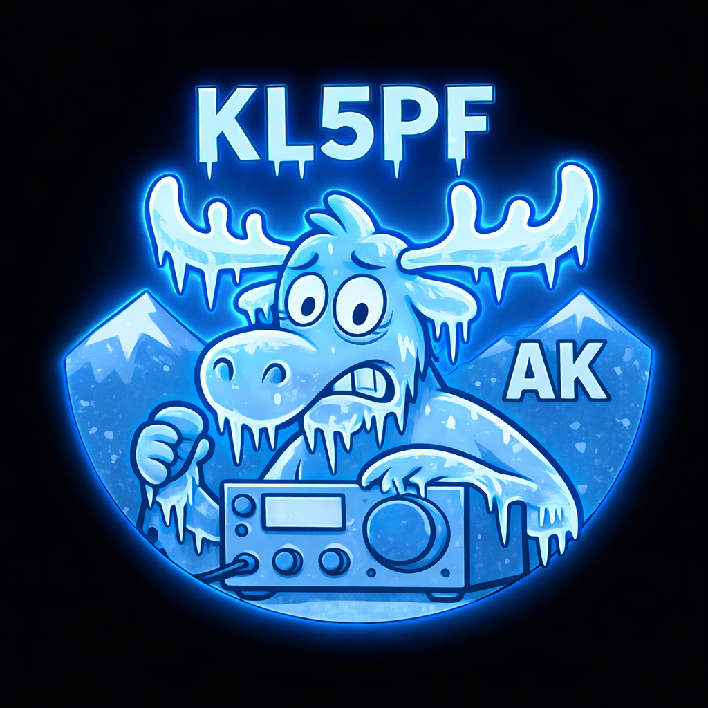

T-Deck Offline Maps
Generate offline maps for the T-Deck in minutes.
Fully offline on the device. No internet required in the field.
Field-tested on real hardware in Alaska and the Lower 48.
Offline builds: working
SD workflow: working
Regional scripts: working
Overlays: in progress
What this does
Built for field use
- Builds offline map tiles for the T-Deck
- Loads maps from SD card using Meshtastic MUI
- Works fully offline on the device
- Fast regional builds
- Overlay support (POTA / GeoJSON) — scripts available, device rendering in progress
Before you start
Quick checklist
- T-Deck running Meshtastic with MUI
- SD card inserted and available
- Python 3 installed
- Internet available for tile downloads only
- Basic command line usage
Fast path
Get a Working Map Fast
Run this to build a ready-to-use offline map:
git clone https://github.com/kl5pfak/tdeck-offline-maps-guide
cd tdeck-maps-guide
git clone https://github.com/JustDr00py/tdeck-maps ~/tdeck-maps
pip3 install requests Pillow
./build-ak.sh
Then insert the SD card, reboot, and open Maps (MUI).
Build maps
Quick builds
./build-ak.sh
./build-anchorage.sh
./build-charleston.sh
Builds can take several minutes depending on region and zoom level.
Custom region
Start from your own location
./build-core.sh "Denver, Colorado" 4 10 terrain
Use custom builds when you want a smaller region or different map source.
Load maps
Copy to SD card
- Copy files to
/maps/osm/
- Insert SD card
- Reboot the device
- Open Maps in MUI
Required layout
SD card structure
/maps/osm/
├── 4/
├── 5/
├── 6/
├── 7/
├── 8/
├── 9/
└── 10/
System status
Current project state
- Offline map builds: working
- SD card workflow: working
- Regional build scripts: working
- Overlay support: scripts available, rendering in progress
Alaska strategy
Recommended starting point
- Zoom 4–7 → statewide base
- Zoom 6–12 → local detail
- Split large areas into regions
Common problems
Quick troubleshooting
- Missing zoom 4–6 → map will NOT load
- Wrong path → must be
/maps/osm/
- Partial copy → incomplete map
- Zoomed in → appears blank
Advanced setup
Need more control?
For custom regions, overlays, and advanced workflows, use the project Wiki.